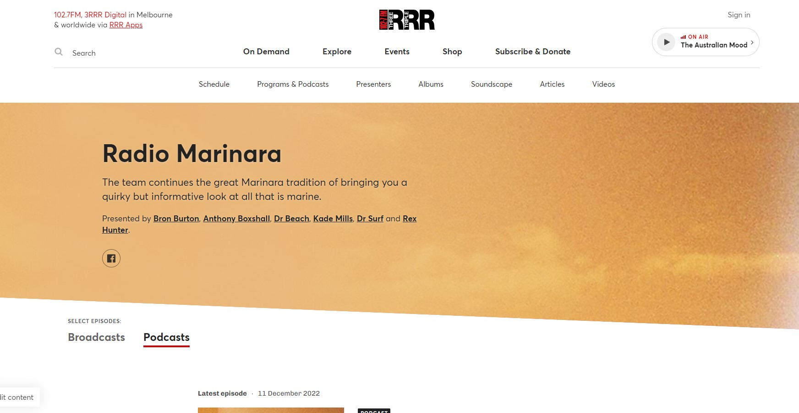

Short film by Tatiana Doroshenko


Mixed in 5.1 @ RMIT Studios using Protools

Foley recording included footsteps, clothes rustling, air conditioning, bag sounds, doors, and chairs thrown around!

Thanks to John Philips for getting us in touch and wingman Pauly C!
Overdubs. Tracks imported/created from/in Logic.
Glenn Bennie BandCamp - FaceBook - Ricky Maymi Twitter

Ricky used an Ebow on most tunes. 2x close mics (Royer 122 and an SM58) for alternate tones and 1x mic on the far side of the studio facing the glass capturing the only reflections available in the very dead tracking space.
/-->
Working sound now @ TheJazzLab


Thanks to Michael Tortoni, Jeremy, Tok, and Kristjan for the gig!
Running 2x record sessions in RMIT's A studio and tagging along for a trip to Headgap with Julian Poulsen and the gang.
CambodianSpaceProject - HeadGap

Neve Genesys console and a some classic outboard gear into Protools, tracking all together live, isolating the bass and guitar to take tracks to HeadGap later that week for the Horns!
A fave track was a dub groove about a giant snail making its way across a bar ខ្យងយក្ស ? The second record session had Julian ripping overdubs for nearly 8 hours straight. CSP's crazy schedule meant someone was napping whenever possible, usually in the control room with monitors up too.
Sorry I missed the last weekend Julian and thanks John! Was a great time. សូមអរគុណ!. Alter ego Pauly C on the scene.
Content rceation weekend at Collingwood Yard's Music Market
Tasked with live recording 8x acts over the weekend for Craig/ZenArcade.

Desk: Yamaha QL1. Capturing audio straight from the networked RIO3224-D2 stage box into Reaper. A bit of pre-production had to be done to get Dante Virtual Soundcard and Dante Controller playing along with the desk and then Reaper.
Artists: Charles Jenkins, Little Wise, Nick Batterham, Hamish Cowan, Chris Dubrow, Bec Sykes, Joyce Prescher, Sianna Lee.
Another live multitrack recording for Craig Kember / Zen Arcade. X played their album "Aspirations" in full for a coinciding 40th anniversary night.


Write-up by Ronald Brown can be found here: i94 Bar: FORTY YEARS AFTER "X-ASPIRATIONS", THERE'S NOTHING LIKE X AT THE TOTE
<
The house desk (Digico S21) had been re-patched locally earlier that day and Dazza's mic set-up was almost bare bones - so there weren't any luxuries left for the capture - however, the recordings came out sounding pretty nice, considering the sound coming off stage. See linked article for more.
This was the last live capture using Protools into a macbookpro. While a wasted punter/dickhead critiqued Dazza's work, the unfounded negativity that made no dent on Daz found another way. At the very same moment, stopping record, an error popped up in tools and we lost the BV track. Sorry about that Craig!
Tracks Live / Reaper has been much sturdier running from the macbook since.
RMIT extra-curricular fun. Midnight Oil's Jim Moginie combines music and art in - 'The Colour Wheel', a guitar orchestra exploring the concept of synesthesia, putting the newly installed Capitol lighting system to use.
In anticipation of the ColourWheel coming to The Capitol in 2023, a group of eager volunteers helped staff to put on three dry-run shows to assess the productions viability/kinks/potential.

ColourWheel BandCamp - ColourWheel Vimeo
Desk: Allen & Heath SQ6. 2x large subwoofers were brought in and we patched into the Capitol's PA system. Testing the system with pink noise and an RTA showed promising signs. But when really pushed, the loud stage volume caused issues with the clarity of the performance. The PA being set up through a Q-sys network was geared to accomodate lectures and speakers, and not so much orchestral rock \m/,. One run through was even performed without the PA, though a little underwhelming. Hopefully 2023 has a PA set-up brought in or the performers each bring a Fender Twin.
Triple R volunteer, creating weekly podcasts for streaming on rrr.org.au/explore/podcasts/radio-marinara and other major platforms.
I am the Podfather.
Sound at the Workers. The big square concrete room doesn't sound great, BUT NicoleHalfordandTheRoseLimbs sure did.

In May 2022, the Astor Theatre showcased a new documentary, Love In Bright Landscapes. The film celebrates the late David McComb of the Triffids. The Astor Theatre presented the film in a double feature, with a Q&A and a tribute concert after the showing. Snap Scene: Love In Bright Landscapes: A Tribute To David Mccomb, Astor Theatre, 15th May 2022

Through John Philips and Craig Kamber (Zen Arcade), helping Mark Barry set up stage mics, X32 desk, and PA system. 4 PA's and two subs - along with Roland S Howards amp on loan for JP Shilo - was more than enough volume to fill the theatre. Recording out of the X32 desk was an easy USB out, to laptop, capture using Tracks Live.
Later gave an incredibly awkward interview published on RMIT's student news page: Sound Production student shines in new documentary, the title made it sound a little misleading..